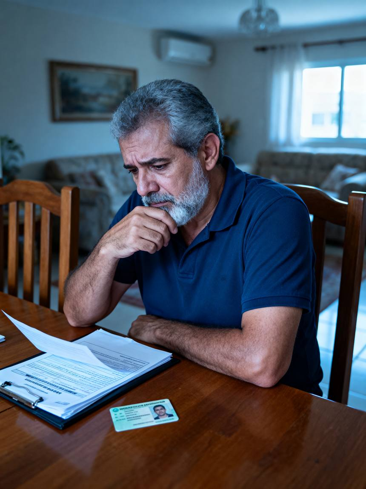
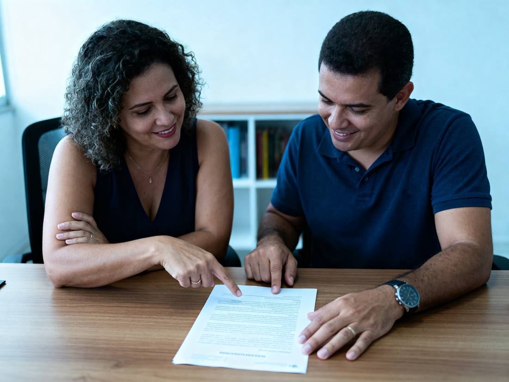

Inventário e regularização de herança
Orientação jurídica para inventário extrajudicial e regularização dos bens deixados pelo seu familiar.
Imóveis, veículos e valores não passam automaticamente para os herdeiros. Enquanto o inventário não é feito, o patrimônio continua registrado no nome de quem morreu.
Imóvel ainda no nome do falecido
Herança que nunca foi regularizada
Herdeiros que precisam dividir os bens
Dúvidas sobre documentos e próximos passos
Se você se reconheceu em alguma dessas situações, o primeiro passo é entender em que ponto o seu caso está.

Pode, quando os requisitos legais estão presentes. Nesses casos o inventário é feito por escritura pública, com acompanhamento de advogado, sem depender de uma ação judicial.
Nem todo caso segue por esse caminho. Situações com testamento, herdeiros menores ou incapazes, ou falta de acordo entre os herdeiros exigem análise específica e podem seguir pela via judicial.

Entender quem são os herdeiros, quais bens existem e qual via o caso permite.
Reunir as certidões e os documentos do falecido, dos herdeiros e dos bens.
Lavratura da escritura de inventário e partilha em cartório.
Transferência e averbação dos bens para o nome dos herdeiros.
Casa, apartamento, terreno ou área rural registrados no nome do falecido.
Carro, moto ou outro veículo que precisa mudar de titularidade.
Contas bancárias, aplicações, consórcios e saldos a receber.
Participação em empresa e demais patrimônios deixados pelo familiar.
O levantamento completo é feito na análise do caso.
Você conta o que aconteceu, quem são os herdeiros e quais bens existem.
Verificamos o que já existe e o que ainda precisa ser providenciado.
Cartório ou via judicial, conforme o que a lei permite para a sua situação.
Do pedido das certidões até os bens registrados no nome dos herdeiros.
O caminho de cada caso é definido pela combinação entre estes pontos.
Quem são, se há menores ou incapazes, se todos estão de acordo.
O que existe, onde está registrado e em que situação.
O que já está em mãos e o que precisa ser providenciado.
Como os bens serão divididos entre os herdeiros.
O que falta para cada bem ficar no nome certo.
Cada caso precisa ser analisado individualmente.
Lucas Miranda
Advocacia com orientação clara e atendimento próximo.
Atuação voltada à regularização de heranças e ao acompanhamento de inventários, do primeiro atendimento até a transferência dos bens.
Você fala diretamente com quem cuida do seu caso.
Falar com Lucas MirandaQuem está em outra cidade ou em outro estado é atendido de forma online, com envio de documentos à distância.
É o inventário feito em cartório, por escritura pública, com acompanhamento de advogado, quando os requisitos legais estão presentes.
Sim. A presença de advogado é exigida tanto no inventário em cartório quanto no judicial.
Não. Casos com testamento, herdeiros menores ou incapazes, ou sem acordo entre os herdeiros exigem análise específica e podem seguir pela via judicial.
Em geral, certidão de óbito, documentos pessoais do falecido e dos herdeiros, certidões de estado civil, documentos dos bens e certidões negativas. A lista exata depende do caso e do cartório.
A legislação prevê prazo para a abertura do inventário, e o atraso pode gerar acréscimo no imposto de transmissão. Essa verificação é feita logo no início.
O custo depende dos bens envolvidos, do imposto de transmissão e das custas do cartório, e por isso é definido depois da análise do caso. Os honorários seguem os parâmetros da tabela da OAB.
Converse com Lucas Miranda e entenda os próximos passos do seu caso.
Duas informações e o atendimento continua pelo WhatsApp.